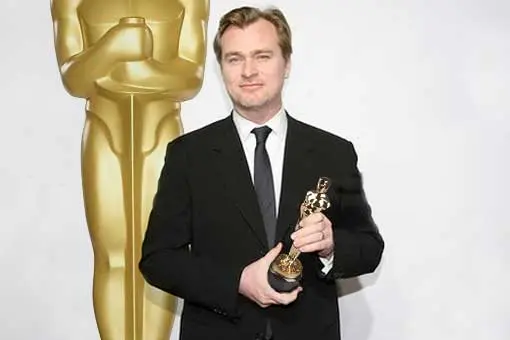

Christopher Nolan es un reconocido director de cine, guionista y productor británico nacido en Londres el 30 de julio de 1970. Es director de algunas de las mejores películas del siglo XXI, como lo son Interstellar, Inception o The Dark Knight.
Christopher Nolan tenía un gran interés por el cine desde una temprana edad, llegando a crear sus primeras películas a la temprana edad de 7 años, junto con la cámara de su padre. Fue educado en una escuela independiente en Hertfordshrine, Inglaterra. Más tarde, empezó a estudiar en la University College, mientras que a la par que estudiaba, realizaba unos cortometrajes en una escuela de cine. Después de terminar sus estudios en la University College de Londres, empezó con el cine independiente y después de su gran éxito con su segunda película, Memento, se transfirió al cine de estudio con Insomnia.
Las películas de Nolan tocan temas como lo son la moral humana, identidad personal, o la construcción del tiempo. Dentro de sus obras puedes observar como utiliza en gran cantidad algunos conceptos matemáticos, efectos especiales destacables y perspectivas materialistas.
Actualmente, se encuentra casado con Emma Thomas y tiene 4 hijos con los que reside en Los Angeles. Christopher Nolan sigue trabajando, después de su último gran éxito, Oppenheimer.
